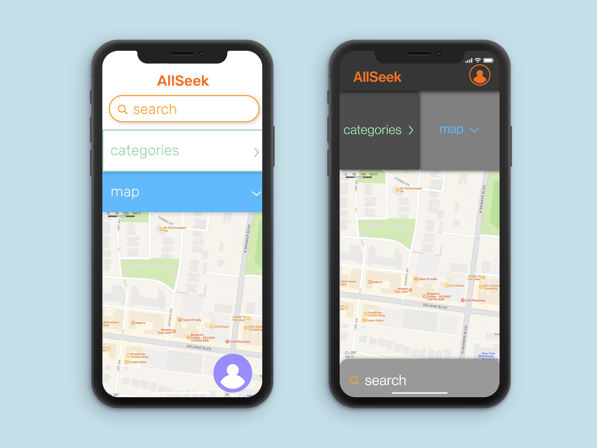
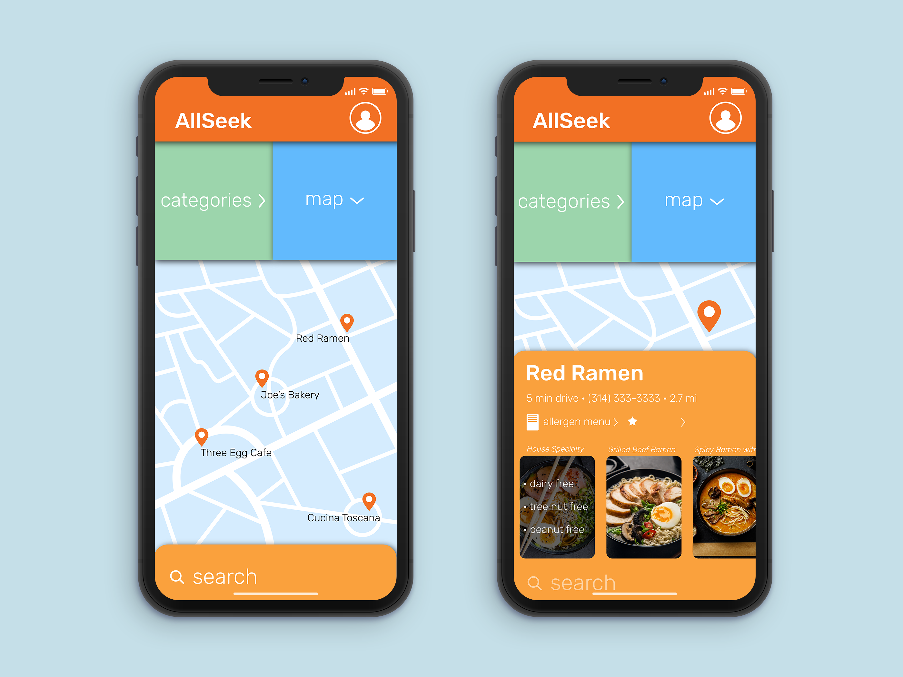
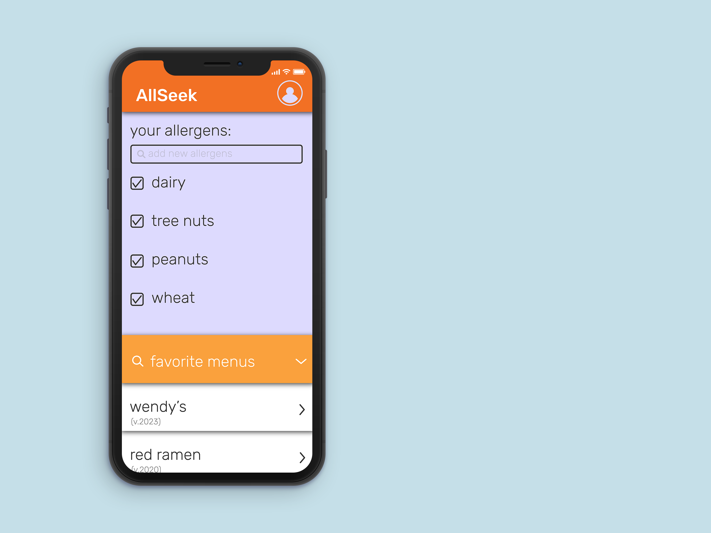

Galen Aubrey Hicks
AllSeek app concept
AllSeek is an application that was designed to help people with allergies find restaurants with
allergen menus with ease, as well as access all of these allergen menus in one consolidated place.
With AllSeek's map, users can easily see where to find allergen friendly food places around them;
they can also see suggestions for food that doesn't contain the specific allergens that they themselves are allergic to.
Two preliminary design directions, before the final:

Two screens from the final design direction: the home screen and the user profile screen.

